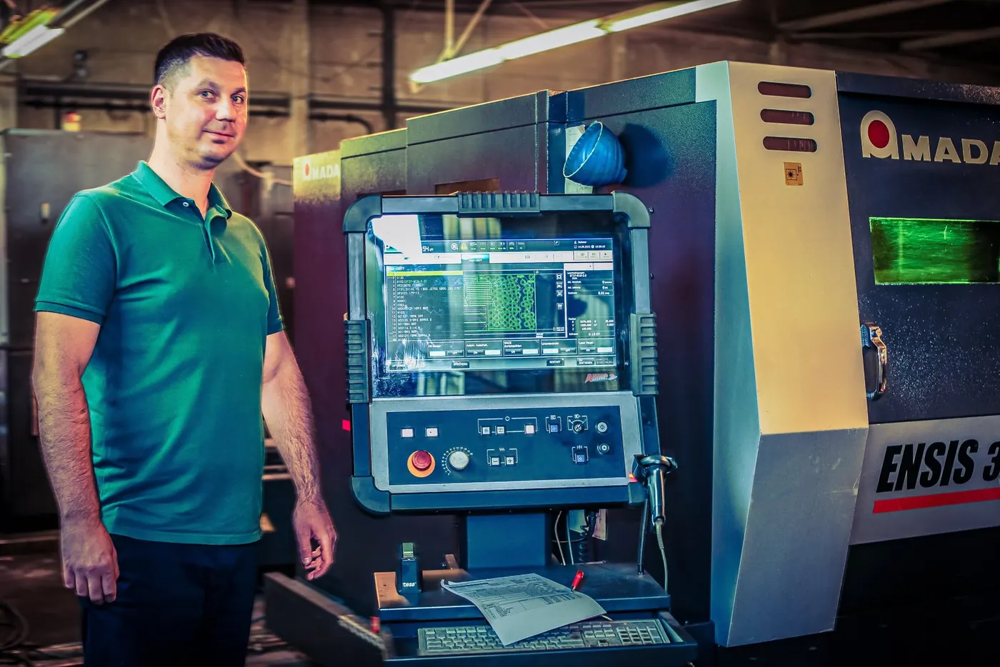

Trumpf TruLaser 5030
- Laserleistung
- 12 kW
- Tafelformat
- 3000 × 1500 mm
- Stahl
- bis 30 mm
Zuschnitt und Kante unter einem Dach — und ein Ansprechpartner für beides.
Jede Schnittstelle zwischen zwei Betrieben kostet Zeit, Transport und Abstimmung. Wir haben sie weggelassen.
Die Anlagen stehen in einer Halle. Was morgens geschnitten wird, kann mittags gekantet und nachmittags auf der Palette sein.

Darum ist ein Teil bei uns nicht zwischen zwei Betrieben unterwegs. Es geht ein paar Meter weiter, zur nächsten Maschine.
Was morgens geschnitten wird, ist mittags gekantet und nachmittags auf der Palette.
Die beiden Zahlen unten sind der Jahresdurchsatz von 2025. Sie stehen hier, weil sie die Frage beantworten, die uns Einkäufer als erstes stellen: Habt ihr die Kapazität für meine Serie?
Die kurze Antwort für den Zuschnitt lautet ja. Bei allem, was danach kommt, sagen wir Ihnen ehrlich, wann wir anfangen können.

Ein Schritt oder alle: Mit der Zeichnung sagen wir Ihnen, was davon auf unsere Anlagen passt.
Oder direkt anrufen: 08772 803707